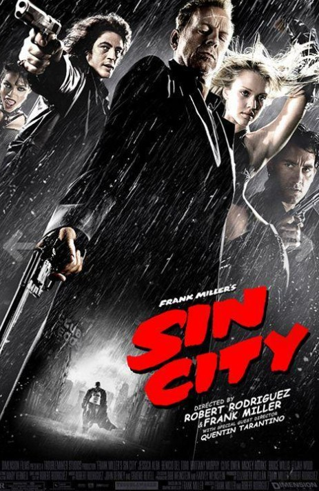

Sobre mí
Hola, soy Manuel Correderas. Soy un desarrollador apasionado por la tecnología y el diseño web. Mi misión es crear soluciones digitales innovadoras.

Proyectos

ALQUILARTE
Alquilarte es una solución digital integral para la administración de alquileres en el sector inmobiliario. Su objetivo es automatizar procesos críticos como el registro de propiedades, inquilinos, contratos y pagos, facilitando la generación de reportes contables y financieros en tiempo real. Además, incorpora alertas para vencimientos, coordinación de visitas y tareas de mantenimiento, e integración con sistemas contables, lo que permite mejorar la eficiencia y reducir errores en la gestión diaria de la empresa.

Salud Viandah
Salud Viandah es una propuesta gastronómica centrada en la alimentación saludable, rica y accesible. Ofrecemos viandas nutritivas, equilibradas y visualmente apetitosas, elaboradas con ingredientes frescos y de alta calidad. Nuestro objetivo es facilitar una alimentación consciente, sin sacrificar el sabor ni el placer de comer bien. A través de un menú variado que incluye opciones vegetarianas, veganas, keto, y con proteínas animales, buscamos adaptarnos a las distintas necesidades nutricionales y estilos de vida. Cada plato está diseñado por profesionales, para garantizar el aporte adecuado de nutrientes y apoyar una vida activa y saludable. Contamos con un sistema de pedidos online, promociones semanales, y una red de distribución eficiente que lleva nuestros platos directamente a la puerta de nuestros clientes. Además, promovemos la educación alimentaria, el consumo responsable, y una relación más saludable con la comida.
Habilidades
- HTML5
- CSS3
- JavaScript
- Responsive Design
Contacto
Películas Favoritas
Película 1

En 2142, una sonda espacial de la corporación Weyland-Yutani investiga los restos del USCSS Nostromo y recoge un objeto orgánico que contiene un Xenomorfo. Tiempo después, en la colonia minera Jackson's Star, la joven Rain Carradine, una huérfana que trabaja con su hermano adoptivo Andy, un humano sintético reprogramado, acepta unirse a su ex-novio Tyler para viajar a una nave espacial abandonada a intentar recuperar unas cámaras de criostasis. Éstas les permitirán a ellos y a sus amigos (la hermana de Tyler, Kay, su primo Bjorn y la novia de este, Navarro) escapar todos al planeta Yvaga
Película 2

El día de su boda, una asesina profesional (Thurman) sufre el ataque de algunos miembros de su propia banda, que obedecen las órdenes de Bill (David Carradine), el jefe de la organización criminal. Logra sobrevivir al ataque, aunque queda en coma. Cuatro años después despierta dominada por un gran deseo de venganza.
Película 3
En Sin City, ciudad de policías corruptos y atractivas mujeres, unos buscan venganza, otros, redención, o ambas cosas a la vez. Marv (Mickey Rourke) se propone vengar la muerte de su único amor. Dwight (Clive Owen) es un investigador privado con problemas que resolver. Hartigan (Bruce Willis), el único policía honrado de la ciudad, sigue la pista de una joven que está en manos del sádico hijo de un senador.